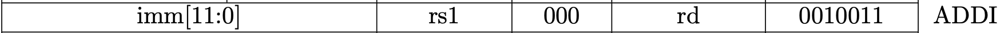

CPU with Two Instructions
This is a part of Writing a RISC-V Emulator in Rust. Our goal is running xv6, a small Unix-like OS, in your emulator in the final step.
The source code used in this page is available at d0iasm/rvemu-for-book/01/.
The Goal of This Page
In this page, we will implement a simple CPU and we can execute the sample
file
containing add and addi instructions in our emulator. The add instruction
adds 64-bit values in two registers, and the addi instruction adds a 64-bit
value in a register and a 12-bit immediate value.
We successfully see the result of addition in the x31 register when we execute
the sample binary file add-addi.bin.
// add-addi.bin contains the following instructions:
// main:
// . addi x29, x0, 5 // Add 5 and 0, and store the value to x29.
// . addi x30, x0, 37 // Add 37 and 0, and store the value to x30.
// . add x31, x30, x29 // x31 should contain 42 (0x2a).
$ cargo run add-addi.bin
...
x28=0x0 x29=0x5 x30=0x25 x31=0x2a
Background
RISC-V is a new instruction-set architecture (ISA) that was originally designed to support computer architecture research and education at the University of California, Berkeley, but now it gradually becomes a standard free and open architecture for industry implementations. RISC-V is also excellent for students to learn computer architecture since it's simple enough. We can read the RISC-V specifications for free and we'll implement a part of features in Volume I: Unprivileged ISA and Volume II: Privileged Architecture. The Unprivileged ISA defines instructions, the binary that the computer processor (CPU) can understand. Currently, RISC-V defines 32-bit and 64-bit architecture. The width of registers and the available memory size is different depending on the architecture. The 128-bit architecture also exists but it is currently in a draft state.
Rust is an open-source systems programming language that focuses on performance and safety. It is popular especially in systems programming like an operating system. We're going to implement our emulator in Rust.
An emulator is, in simple words, an infinite loop to execute a RISC-V binary one by one unless something wrong happens or a user stops an emulator explicitly. In this book, we try to understand the basic RISC-V architecture by making a RISC-V emulator.
RISC-V ISA
RISC-V ISA consists of modules, a base integer ISA plus optional extensions. The base integer ISA must be implemented in any platform. There are 2 variants in the base integer ISA, RV32I for a 32-bit architecture and RV64I for a 64-bit architecture.
The base integer ISA only contains simple integer arithmetic operations so it's not enough so that it can't run complex systems such as OSes. RISC-V defines a combination of a base ISA plus selected extensions as a "general-purpose" ISA, called RV32G or RV64G, to allow complex systems to run on RISC-V hardware.
Here is the list of ISAs that RV64G includes:
- RV64I: base integer instructions
- RV64M: integer multiplication and division instructions
- RV64A: atomic instructions
- RV64F: single-precision floating-point instructions
- RV64D: double-precision floating-point instructions
- RVZicsr: control and status register instructions
- RVZifencei: instruction-fetch fence instructions
We'll only support the instructions that xv6 uses which are RV64I, RVZicsr, a part of RV64M, and a part of RV64A.
Build RISC-V Toolchain
First, we need to build a RISC-V toolchain for RV64G. The default toolchain will use RV64GC which contains a general-purpose ISA and a compressed ISA. However, we will not support the compressed ISA in our emulator so we need to tell the architecture we use to the toolchain.
Download code from the
riscv/riscv-gnu-toolchain
repository and configure it with RV64G architecture. After executing the
following commands, we can use riscv64-unknown-elf-* commands.
$ git clone --recursive https://github.com/riscv/riscv-gnu-toolchain
$ cd riscv-gnu-toolchain
$ ./configure --prefix=<path-to-riscv-toolchain> --with-arch=rv64g
$ make && make linux
// Now we can use riscv64-unknown-elf-* commands!
Create a New Project
We use Cargo, the Rust package manager. See the installation
page in the
Cargo book to install it. I'll call our project rvemu-for-book because I
originally implemented rvemu and I refactored
the code for this book.
The command cargo new can make a new project. We can see "Hello, world!" when
we execute an initialized project by cargo run.
$ cargo new rvemu-for-book
$ cd rvemu-for-book
$ cargo run
Hello, world!
Create a Basic CPU
CPU is the most important part of a computer to execute instructions. It has registers, a small amount of fast storage that a CPU can access. The width of registers is 64 bits in the 64-bit RISC-V architecture. It also has a program counter to hold the address of the current instruction.
The following struct contains 32 registers, a program counter, and memory. Actual hardware doesn't have a memory inside a CPU and the memory connects to the CPU via a system bus. We will make a memory and system bus module on the next page, and we create a CPU that contains a memory directly for now.
main.rs
#![allow(unused)] fn main() { struct Cpu { regs: [u64; 32], pc: u64, code: Vec<u8>, } }
Registers
There are 32 general-purpose registers that are each 64 bits wide in RV64I. Each register has a role defined by the integer register convention. Basically, an emulator doesn't care about the roles of a register except zero (x0) and sp (x2) registers. The zero register x0 is hardwired with all bits equal to 0. The sp register x2 is a stack pointer. A stack is a data structure mainly located at the end of the address space. It is especially used to store local variables. A stack pointer keeps track of a stack. A value of a stack pointer is subtracted in a function prologue, so we need to set it up with a non-0 value.
main.rs
#![allow(unused)] fn main() { // Set the register x2 with the size of a memory when a CPU is // instantiated. regs[2] = MEMORY_SIZE; // 1024 * 1024 * 128 (128MiB). // Reset the value of register x0 with 0 in each cycle to mimic that // register x0 is hardwired with all bits equal to 0. self.regs[0] = 0; }
Fetch-decode-execute Cycle
The main job of the CPU is composed of three main stages: fetch stage, decode stage, and execute stage. The fetch-decode-execute cycle is also known as the instruction cycle.
A CPU follows the cycle from the computer boots up until it shuts down. An emulator is ideally an infinite loop and continues to perform the fetch-decode-execute cycle infinitely unless something wrong happens or a user stops an emulator explicitly. However, we're going to stop an emulator implicitly when the program counter is 0 or over the length of memory, and an error happens during the execution.
- Fetch: Reads the next instruction to be executed from the memory where the program is stored.
- Decode: Splits an instruction sequence into a form that makes sense to the CPU.
- Execute: Performs the action required by the instruction.
Also, we need to add 4 bytes, the size of one instruction, to the program counter in each cycle.
main.rs
fn main() -> io::Result<()> { ... while cpu.pc < cpu.dram.len() as u64 { // 1. Fetch. let inst = cpu.fetch(); // 2. Add 4 to the program counter. cpu.pc = cpu.pc + 4; // 3. Decode. // 4. Execute. cpu.execute(inst); } ...
We'll make fetch and execute methods in CPU. The decode stage is performed
in the execute method for the sake of simplicity.
main.rs
#![allow(unused)] fn main() { impl Cpu { fn fetch(&self) -> u32 { // Read 32-bit instruction from a memory. } fn execute(&mut self, inst: u32) { // Decode an instruction and execute it. } } }
Set Binary Data to the Memory
In order to implement the fetch method, we need to read a binary file from a
command line and store the content in the memory. We can get command-line
arguments via the standard env module. Let a file name place at the first
argument.
The binary is set up to the memory when a new CPU instance is created.
main.rs
use std::env; fn main() -> io::Result<()> { let args: Vec<String> = env::args().collect(); if args.len() != 2 { panic!("Usage: rvemu-simple <filename>"); } let mut file = File::open(&args[1])?; let mut code = Vec::new(); file.read_to_end(&mut code)?; let cpu = Cpu::new(code); ... } impl Cpu { fn new(code: Vec<u8>) -> Self { Self { regs: [0; 32], pc: 0, dram: code, } } fn fetch(&self) -> u32 { ... } fn execute(&mut self, inst: u32) { ... } }
Fetch Stage
Now, we are ready to fetch an instruction from the memory.
What we should be careful to fetch an instruction is endianness, which is the term refers to how binary data is stored. There are 2 types of endianness: little-endian and big-endian. A little-endian ordering places the least significant byte (LSB) at the lowest address and the most significant byte (MSB) places at the highest address in a 32-bit word. While a big-endian ordering does the opposite.

Fig 1.1 Little-endian and big-endian 2 instructions.
RISC-V has either little-endian or big-endian byte order. Our emulator only supports a little-endian system because RISC-V originally chose little-endian byte ordering and it's currently dominant commercially like x86 systems.
Our memory is the vector of u8 , so read 4 elements from the memory and shift
them in the little-endian ordering.
main.rs
#![allow(unused)] fn main() { impl Cpu { ... fn fetch(&self) -> u32 { let index = self.pc as usize; return (self.dram[index] as u32) | ((self.dram[index + 1] as u32) << 8) | ((self.dram[index + 2] as u32) << 16) | ((self.dram[index + 3] as u32) << 24); } ... } }
Decode State
RISC-V base instructions only have 4 instruction formats and a few variants as we can see in Fig 1.2. These formats keep all register specifiers at the same position in all formats since it makes it easier to decode.

Fig 1.2 RISC-V base instruction formats. (Source: Figure 2.2 in Volume I: Unprivileged ISA)
Decoding for common parts in all formats is performed by bitwise operations, bit shifts and bitwise ANDs.
main.rs
#![allow(unused)] fn main() { impl Cpu { ... fn execute(&mut self, inst: u32) { let opcode = inst & 0x7f; let rd = ((inst >> 7) & 0x1f) as usize; let rs1 = ((inst >> 15) & 0x1f) as usize; let rs2 = ((inst >> 20) & 0x1f) as usize; ... }
Execute State
As a first step, we're going to implement 2 instructions add (R-type) and
addi (I-type). The add instruction adds 64-bit values in two registers,
and the addi instruction adds a 64-bit value in a register and a 12-bit
immediate value. We can dispatch an execution depending on the opcode field
according to Fig 1.3 and Fig 1.4. In the addi instruction, we need to decode
12-bit immediate which is sign-extended.

Fig 1.3 Add instruction (Source: RV32I Base Instruction Set table in Volume I: Unprivileged ISA)

Fig 1.4 Addi instruction (Source: RV32I Base Instruction Set table in Volume I: Unprivileged ISA)
main.rs
#![allow(unused)] fn main() { impl Cpu { ... match opcode { 0x13 => { // addi let imm = ((inst & 0xfff00000) as i32 as i64 >> 20) as u64; self.regs[rd] = self.regs[rs1].wrapping_add(imm); } 0x33 => { // add self.regs[rd] = self.regs[rs1].wrapping_add(self.regs[rs2]); } _ => { dbg!("not implemented yet"); } } } } }
The reason for using wrapping_add instead of plus (+) operation is to avoid
causing an arithmetic overflow when the result is beyond the boundary of the
type of registers which is a 64-bit unsigned integer.
Testing
We're going to test 2 instructions by executing a sample file and check if the registers are expected values. I prepared a sample binary file available at d0iasm/rvemu-for-book/01/. Download the add-addi.bin file and execute it in your emulator.
To see the registers after execution is done, I added the
dump_registers
function. Now, we successfully see the result of the addition in the x31
register when we execute the sample binary file.
// add-addi.bin is binary to execute these instructions:
// main:
// . addi x29, x0, 5 // Add 5 and 0, and store the value to x29.
// . addi x30, x0, 37 // Add 37 and 0, and store the value to x30.
// . add x31, x30, x29 // x31 should contain 42 (0x2a).
$ cargo run add-addi.bin
...
x28=0x0 x29=0x5 x30=0x25 x31=0x2a
How to Build Test Binary
Our emulator can execute an ELF binary without any headers and its entry point
address is 0x0 . The
Makefile
helps you build test binary.
$ riscv64-unknown-elf-gcc -Wl,-Ttext=0x0 -nostdlib -o foo foo.s
$ riscv64-unknown-elf-objcopy -O binary foo foo.bin
Disclaimer
The sample file doesn't cover edge cases (e.g. arithmetic overflow). We'll not aim at the perfect implementation of our emulator in this page and in the following pages because it costs too much. The book just focuses on running xv6 in our emulator and its implementation is possibly wrong or not enough.